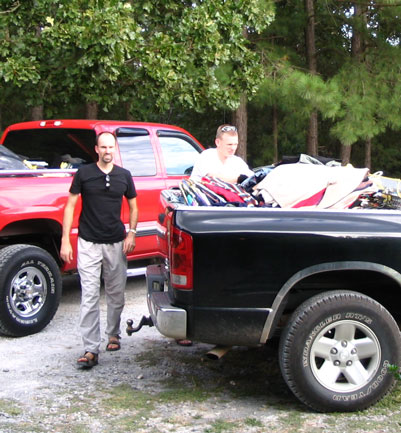
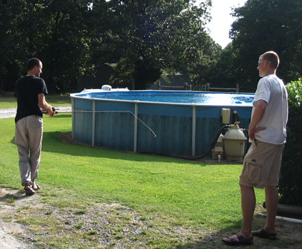
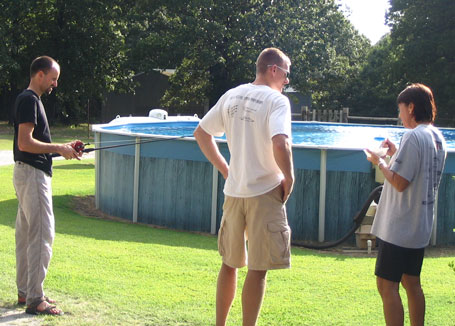
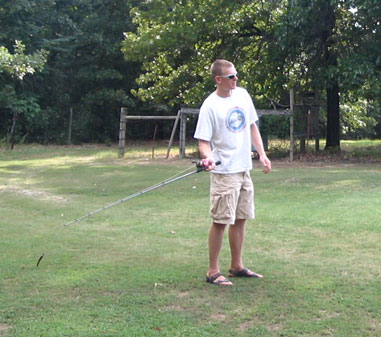
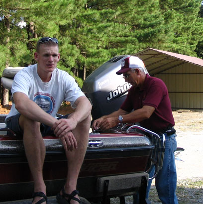

August 2005
| We took a Westville/HCR trip in August.
The boys did a stopover at my parents' house and I stayed behind as they
went for a weekend of climbing. I don't have pictures of the
climbing, but I do have some of our time together at Mom &
Dad's.
|
|
 |
 |
| I don't recognize this truck, but it looks like we're filling it up
with the leftovers of a yard sale. Hey, if you have two strong young men show up to eat your food, you may as well get some work out of them, right? |
Time to do some schoolin' on Bass fishing techniques. (My Dad's
favorite hobby) I can just hear Eric telling Luc how things are done, note the skepticism in Luc's stance. |
 |
 |
| Mom joins them, 10 bucks says she's trying to get Luc to eat something. :-) | The skill is mastered. |
 |
|
| Luc, hangin out with my Dad | |